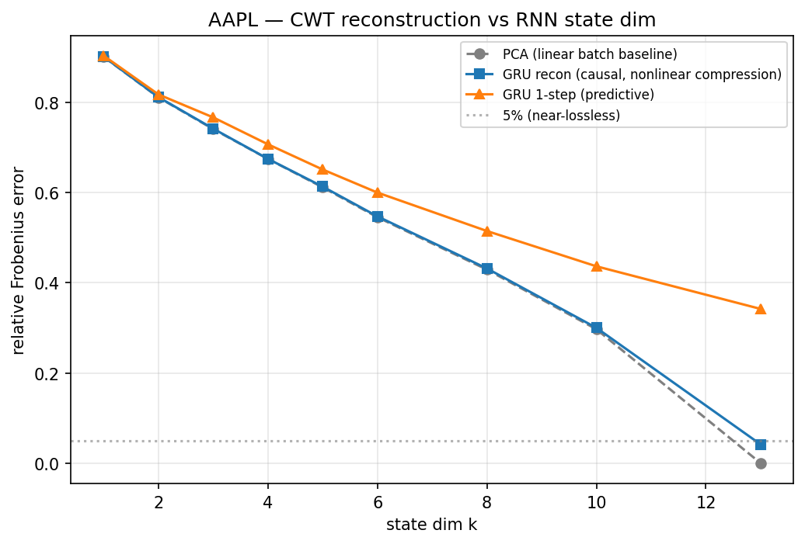
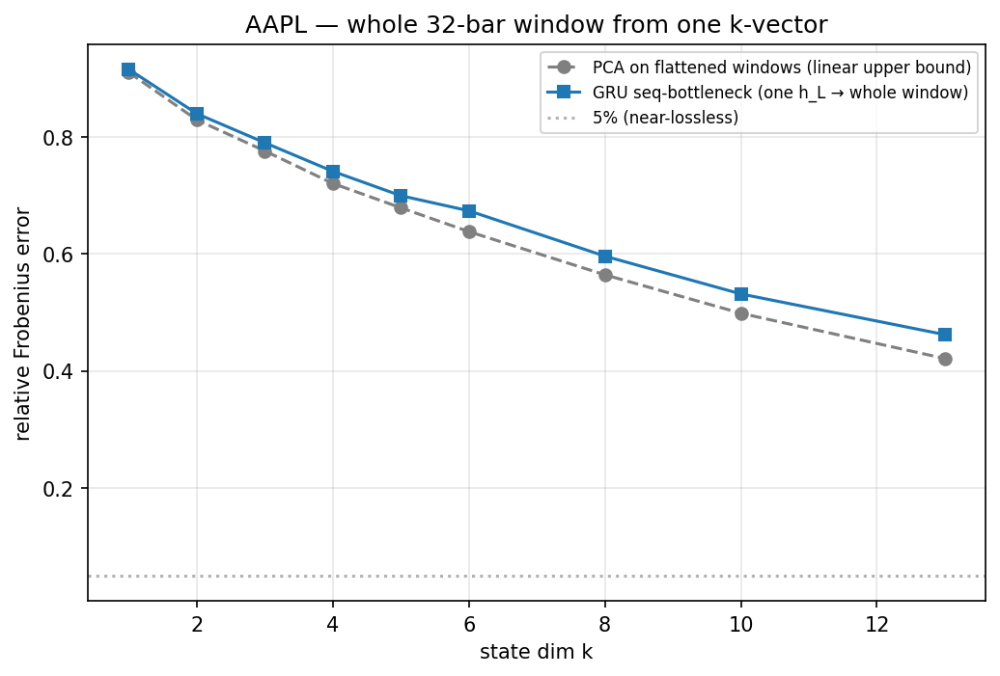
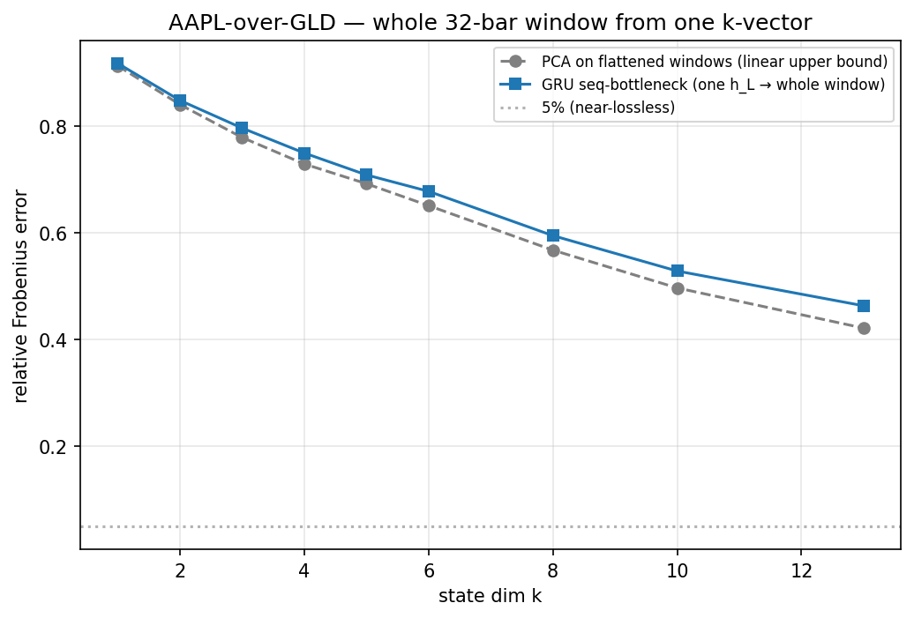
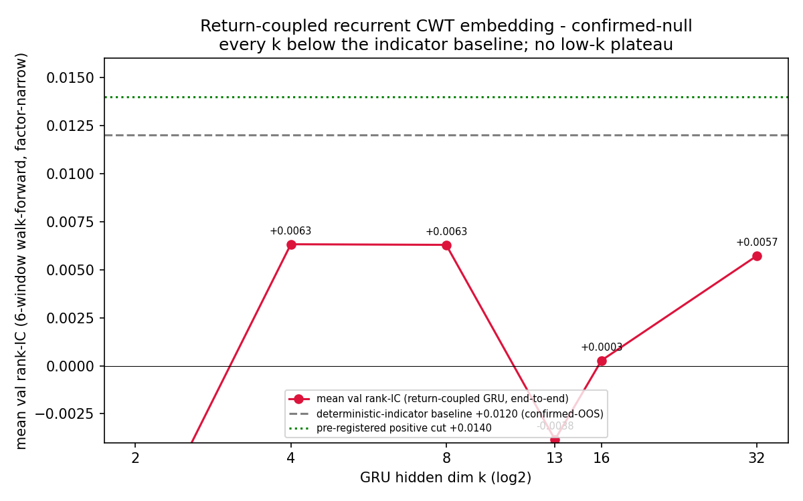

Recursive compression of the causal CWT — linear vs nonlinear, compression vs prediction¶
Operational rule: the 13-scale causal CWT panel of a single
ticker does not admit a cheap low-dimensional recursive state under
a reconstruction objective, and recurrence nonlinearity does not
help. A GRU recurrent autoencoder tracks linear PCA to ~3 decimals at
every state dim k; near-lossless (≤5% rel error) needs k ≈ p = 13
either way. Do not spend effort on nonlinear recurrent encoders as a
reconstruction-faithful CWT compressor — there is no nonlinear
manifold to exploit; the cross-scale redundancy is linear and PCA
already extracts it optimally. If a small fixed-dim CWT state is
wanted, it must be task-coupled (trained against the prediction
target), not reconstruction-fit — because the predictable structure
is far lower-dimensional than the reconstructible structure (the
one-step-ahead column degrades far faster than the reconstruction
column climbs). And a persistence control sharpens this to its strong
form: the one-step CWT-self-prediction latent barely beats the
trivial lag-1 forecast (+0.04 R² at full rank, negative when
compressed) — its apparent skill is autocorrelation, not learned
structure. So "task-coupled" specifically means coupled to forward
returns, not to the CWT's own continuation; a predict-latent of the
CWT is ≈ a lag-1 copy of it and carries no learned signal to embed.
That return-coupled test has since been run and closes the arc
confirmed-null — a GRU trained end-to-end against cross-sectional
rank-IC cannot clear the deterministic-indicator baseline at any
state dim k on factor-narrow (see "Return-coupled embedding — the
arc closure"). The terminal reading is therefore stronger than
"recursive states are the wrong compressor": the causal CWT carries
no cross-sectional return signal recoverable by any representation
move — the binding constraint is the feature class, so the lever is
different data, not a cleverer model on the CWT. Explicit length compression is far harsher than
per-bar width compression: forcing one k-vector to stand in for a
whole L=32-bar window (32× at k=13) loses ~18% of the variance
where the per-bar state was near-lossless — and this curve is
numéraire-invariant (denominating AAPL in gold leaves it
unchanged within ≤0.015 R², identical for k ≥ 8), confirming the
high-dimensionality is intrinsic to the CWT representation, not the
price series.
This page closes a two-diagnostic arc (linear-Gaussian Kalman → GRU) prompted by a user question on converting an unbounded time series into a fixed dimension, and on whether the recurrence's linearity was the binding constraint.
Why this was run¶
The conceptual frame: the only fixed-dim summaries of an unbounded past that actually use unbounded history are recursive states, and a recursive state is only meaningful as a sufficient statistic for the future — there is no target-free notion of "the right state". Kalman is the closed-form linear-Gaussian case; a trained RNN is the learned nonlinear case. The diagnostic asks the measurable version of that question on real data: how few recursive state dims reconstruct the causal CWT, and does that change between a linear and a nonlinear recurrence?
Eval setup (reproducible)¶
- Ticker / data: AAPL, Stooq archive (
./StooqData/, split-/dividend-adjusted close). - Observation panel:
y_t ∈ ℝ^p,p = len(ALL_SCALES) = 13, the causal Ricker CWT (ss_wavelets.causal_cwt) of log-returns input,lookback = 90— the scalogram convention. FirstKERNEL_HALF_EXTENT·max(scale) + lookback = 3·126 + 90 = 468bars dropped (reduced wavelet support). Per-scale z-scored before fitting (mandatory — without it PCA collapses onto scale=126). - Models, same panel + metric:
- Kalman / LDS —
s_t = A s_{t-1} + w_t,y_t = C s_t + v_t. Subspace fit:C= top-kSVD axes,A= least-squares VAR(1) on the latent scores,Q/Rfrom residual covariances. Forward Kalman filter gives the recursive state. Full post-warmup series (~all history). - GRU autoencoder —
h_t = GRU(h_{t-1}, x_t) ∈ ℝ^k,ŷ_t = h_t W_o + b_o(linear emission, so the only difference vs the LDS is recurrence nonlinearity). Hand-rolled numpy + Adam + truncated BPTT (overlapping stride-8 length-32 windows; keepsapps/notebooknumpy-only — tinygrad stays in factor/replay). Last 4000 post-warmup bars (runtime cap).
- Kalman / LDS —
- Metric: relative Frobenius error and R² on the original CWT
scale, swept over state dim
k ∈ {1,2,3,4,5,6,8,10,13}. Three scored quantities:recon— causal reconstructionŷ_tfromh_t/s_tbuilt ony_{:t}(the compression number).predict— one-step-aheadŷ_tfrom state built ony_{:t-1}.pca— non-causal batch SVD projection at rankk(linear upper bound; lossless atk = pby construction).
- Built-in correctness anchor: a GRU with
k ≥ pmust reach R² → ~1. First training pass plateaued at R² 0.786 (underfit, not a data property) and was rejected; overlapping-window retuning reaches R² 0.998 atk=13, validating every small-krow. - Scripts:
apps/notebook/src/ss_notebook/kalman_cwt.py(ss-kalman-cwt),.../rnn_cwt.py(ss-rnn-cwt); the RNN module importscwt_panel+_rel_errfrom the Kalman module so the two tables share the exact panel and metric path.
What the data shows¶
GRU vs linear PCA (AAPL, last 4000 bars, R²)¶
| k | PCA (linear) | RNN recon (causal, nonlinear) | RNN 1-step (predict) |
|---|---|---|---|
| 1 | +0.188 | +0.188 | +0.184 |
| 2 | +0.342 | +0.341 | +0.332 |
| 3 | +0.451 | +0.450 | +0.412 |
| 4 | +0.545 | +0.545 | +0.500 |
| 5 | +0.626 | +0.624 | +0.576 |
| 6 | +0.703 | +0.701 | +0.640 |
| 8 | +0.816 | +0.814 | +0.735 |
| 10 | +0.912 | +0.910 | +0.809 |
| 13 | +1.000 | +0.998 | +0.883 |
Kalman / linear-Gaussian (AAPL, full post-warmup series, R²)¶
| k | PCA = Kalman filtered | Kalman 1-step (predict) |
|---|---|---|
| 1 | +0.185 | +0.179 |
| 4 | +0.538 | +0.489 |
| 8 | +0.816 | +0.727 |
| 10 | +0.913 | +0.802 |
| 13 | +1.000 | +0.873 |
The Kalman filtered column is bit-identical to batch PCA at every
k: the fitted observation noise R is tiny relative to state
scale, so the optimal filter is memoryless — the recursive dynamics
contribute nothing to the filtered reconstruction.
Mechanism¶
- Nonlinearity buys nothing for reconstruction. RNN recon ≈ PCA to
~3 decimals across the whole sweep, with the
k=13anchor at 0.998 confirming the model has capacity and converged. The cross-scale redundancy of the per-scale-z-scored CWT is linear redundancy (adjacent scales are smoothed views of one z-normed price series); PCA already extracts it optimally and a GRU finds nothing more. The no-low-rank result is a property of the CWT panel, not of the linear-Gaussian model class. - No cheap knee. R² is roughly linear in
k(≈0.70 atk=6, ≈0.91 atk=10); near-lossless needs essentially the full rank. This refines the practical reading of thelie_test1-style "8D ≈ 78% variance" intuition: variance-explained and reconstruction-error are different bars, and the latter is unforgiving here. - Reconstructible ≫ predictable. Under both model classes the
predictcolumn sits well belowreconat everyk(RNNk=8: 0.735 vs 0.814;k=13: 0.883 vs 0.998). A state that compresses the CWT near-losslessly still predicts the next CWT vector materially worse — and the predictive gap widens withk. The reconstructible structure is high-dimensional; the predictable structure appears concentrated in far fewer dims. This is the sufficient-statistic point made measurable: a recursive state fit to a reconstruction objective gives compression no better than batch PCA (recurrence wasted) while prediction is strictly worse — the "worst of both", observed twice. - Persistence control — the predict latent learns ≈nothing.
(2026-05-17 follow-up.) The
predictR² is impressive only until benchmarked against the trivial lag-1 forecastŷ_{t+1} = y_t. The CWT is a slowly-varying wavelet transform, so persistence alone reconstructs the next vector at R²=+0.843 (AAPL). Against that floor the learned predict latent is worse when compressed (k=8: +0.735, −0.108 vs persistence) and only marginally better at full rank (k=13: +0.883, +0.040). So "reconstructible ≫ predictable" sharpens to its strong form: marginal learned predictability of the CWT-self-continuation target ≈ 0 — the predict arm's apparent skill is autocorrelation, not a learned forecast. Implication for the recurring "use the predict latent as a word2vec-style embedding for relational selection" idea: the latent is ≈ a lag-1 copy of the CWT, so any geometry on it (centroid / kNN / farthest) is geometry on the current CWT — exactly thelie_test1(kNN-on-CWT IC≈0) andrelational-dwt-failure(4/4 distance scorers) null already on the board. The control falsifies the cheap version of that idea by construction; the one remaining live path — a return-coupled embedding — was then run and also closedconfirmed-null(see "Return-coupled embedding — the arc closure" below). Baseline added tornn_cwt.py(_persistence).

Length compression — sequence bottleneck + numéraire-invariance¶
A follow-up question: the recon/predict arms compress the panel
width (p → k per bar) but the recursive state still emits one
k-vector every bar — the time axis is never shortened. The
distinct operation is length compression: collapse a whole L-bar
window into a representation with fewer numbers than the window holds.
A recurrent state already does this in principle — its final hidden
state h_L is a single k-vector summarizing the entire L-bar
history — so the sharp test is: encode an L-bar window to only
h_L ∈ ℝ^k, then reconstruct the entire (L, p) window from that
one vector. Matched linear baseline: PCA on the flattened windows
(the optimal unconstrained linear k-compression of the same
L·p-dim object). Linear emission again, so the only nonlinearity is
the encoder recurrence.
This is far harsher than per-bar width compression — at L = 32,
p = 13 the window is 416 numbers and k = 13 is a 32× squeeze, so
unlike the per-bar arm there is no k = p → 1.0 anchor; lossless
is impossible in-sweep. The correctness check is instead
monotonicity in k and GRU ≤ PCA-flat (a causal recurrent encoder is
strictly more constrained than an unconstrained linear projection).
To test whether the result depends on the price series or only on the
CWT representation, the same sweep was run on AAPL and on AAPL
denominated in gold (AAPL_close / GLD_close, inner-aligned on
dates; the causal rolling-z-norm makes the GLD≈1/10oz scale constant
irrelevant). Both full, identical settings (250 epochs, k=1→13,
L=32, stride 8, last 4000 post-warmup bars, seed 0):
| k | comp. | AAPL PCA-flat | AAPL/GLD PCA-flat | AAPL GRU | AAPL/GLD GRU | ΔGRU |
|---|---|---|---|---|---|---|
| 1 | 416× | +0.171 | +0.166 | +0.162 | +0.158 | +0.004 |
| 2 | 208× | +0.313 | +0.293 | +0.295 | +0.280 | +0.015 |
| 3 | 139× | +0.398 | +0.393 | +0.376 | +0.366 | +0.010 |
| 4 | 104× | +0.481 | +0.468 | +0.451 | +0.438 | +0.013 |
| 5 | 83× | +0.539 | +0.521 | +0.511 | +0.498 | +0.013 |
| 6 | 69× | +0.593 | +0.576 | +0.546 | +0.541 | +0.005 |
| 8 | 52× | +0.682 | +0.678 | +0.645 | +0.646 | −0.001 |
| 10 | 42× | +0.752 | +0.753 | +0.717 | +0.721 | −0.004 |
| 13 | 32× | +0.823 | +0.822 | +0.787 | +0.785 | +0.002 |
(R² on the original CWT scale; non-overlapping L-block eval. At
k=13, R² ≈ 0.82 = ≈18% of windowed variance unreconstructed,
≈42% relative Frobenius error.)
Length compression is harsh and has no cheap knee. R² is roughly
linear in k; one k-vector cannot hold an L-bar CWT window
without losing ~18% of the variance even at the 32× ratio — the same
qualitative shape as the per-bar width result, but the per-bar arm
reached near-lossless at k = p whereas here k = p is still a 32×
squeeze. The recursive state can collapse the time axis; it just
does so lossily, and the diagnostic quantifies the loss.
The curve is numéraire-invariant. GRU columns differ by ≤0.015 R²
anywhere and are identical (≤0.004) for k ≥ 8, including the k=13
endpoint (0.787 vs 0.785); the epoch-independent PCA-flat baseline
shows the same (≤0.020, ≤0.004 for k ≥ 8). The only systematic
effect is a marginal low-k (k=2–6) ~0.01–0.02 edge for plain
AAPL that washes out by k ≥ 8. Mechanism:
log(AAPL/GLD) = logret(AAPL) − logret(GLD); the GLD term is a
small, weakly-correlated additive perturbation — it adds a sliver of
structure the leading components don't absorb (so low-k is
slightly worse under gold) but does not restructure the panel, so the
tail and endpoint are unchanged. Changing the unit you price in is
not a lever on CWT compressibility — reinforcing that the
high-dimensionality is intrinsic to the causal-CWT representation, not
to the particular price series.


Caveats and scope¶
- Single ticker. AAPL only. Universe-generality is the open
question (see next experiment) — this is
diagnostic, not a train/val claim against a named universe, so per the recording protocol it carries one consolidated diagnostic leaderboard row, not a per-arm OOS row. - Two bar windows. Kalman ran on the full post-warmup series; the GRU on the last 4000 bars (runtime cap). PCA R² differs by ≤0.015 between windows — the qualitative conclusion is robust to it; the RNN table is the internally-consistent one (all three columns, same window).
- Reconstruction objective only. Everything here is reconstruction-fit. It says nothing about a predictive low-dim state — that is exactly what the next experiment isolates.
- Linear emission by design. The GRU decoder is linear so the ablation is clean (only recurrence nonlinearity moves). A nonlinear decoder is a different question, not tested.
- Seq-bottleneck specifics.
L = 32only (the "vsL" curve needs re-runs at other--seq-len); non-overlappingL-blocks for eval, overlapping stride-8 windows for training. AAPL/GLD is inner-aligned on dates so the panel starts ~2006 (GLD lists 2004-11) vs ~earlier for plain AAPL — both capped to the last 4000 post-warmup bars, so the spans overlap but are not identical; the ≤0.004k ≥ 8agreement is robust to that.
Return-coupled embedding — the arc closure¶
The reconstruction question was settled (doesn't compress cheaply, model class doesn't matter) and the persistence control settled the self-prediction question (a latent trained to forecast the CWT's own next vector learns ≈nothing over lag-1). The one target never tested was forward returns: train the recurrent state end-to-end against the cross-sectional rank-IC, not against the CWT's own continuation. That experiment is now done — and it closes the arc negative.
What was run. factor-narrow (297 stooq_us_long,
min_history_bars=6500), the deterministic-indicator-baseline 6-window
walk-forward (train=63 / val=39 / step=39 blocks, rebal_days=20). A
fresh GRU(k) encoder over the 13-scale causal CWT plus a linear head,
trained jointly per window against -pearson_rank_ic (H=20) on the
train rebal slice only, frozen for val — the encoder recurrence is
in the autograd graph, not a frozen reservoir, which is what makes
this orthogonal to the frozen-geometry CWT nulls
(lie_test1 kNN-on-CWT IC≈0,
lie_test4 cwt t≈−0.98, relational-dwt-failure
4/4 scorers). Leak-free: causal CWT, L=32 window ending at the rebal
bar, per-scale standardisation fit train-only, per-window fresh init.
Hyperparams fixed (no val tuning); only k swept. (The un-jitted
32-step BPTT timed out at 3h on Modal; a TinyJit-per-window rewrite
fixed it — k=2 4994s→1175s, bit-identical results — an infra fix that
moved no pre-registered knob.)
Results — mean val rank-IC vs GRU hidden dim k¶
k |
mean val rank-IC | pos-window frac | vs indicator baseline +0.0120 |
|---|---|---|---|
| 2 | −0.0098 | 0.50 | far below |
| 4 | +0.0063 | 0.67 | below |
| 8 | +0.0063 | 0.67 | below |
| 13 | −0.0038 | 0.50 | below |
| 16 | +0.0003 | 0.33 | below |
| 32 | +0.0057 | 0.67 | below |
Eval-only val Sharpe is ~+0.46–0.48 at every k (≈ the universe's
passive level) and IR-vs-EW ≤ 0 for every arm.

Verdict — confirmed-null¶
The pre-registered kill criterion fires mechanically: best k≤4
(+0.0063) is below the +0.0140 positive cut, every arm is at or
below the +0.0120 indicator baseline, and there is no low-k plateau.
No band-edge adjudication — it is unambiguous. The max-capacity k=32
(where this same panel's reconstruction was near-lossless) is no
better than k=4: there is no compact return-coupled state because there
is no return-coupled CWT statistic of any rank that a trained
recurrence recovers on this universe.
Mechanism — the arc's terminal claim¶
This sharpens "reconstructible ≫ predictable" to its strongest form and makes the missing third term explicit:
reconstructible (≈full-rank) ≫ self-predictable (≈lag-1, no learned content) ≫ return-predictable (≈ 0 at every rank).
A trained end-to-end recurrence — the most expressive move available on standard CWT data — fails to clear even the cheap deterministic-indicator baseline. So the binding constraint was never the representation move (reconstruction-fit vs self-prediction vs end-to-end, linear vs nonlinear, frozen vs trained, compressed vs full-rank): it is the CWT feature class itself. This re-derives, from the supervised-end-to-end direction, exactly the null the frozen-geometry CWT tests reached from the unsupervised direction — two independent paths to the same wall.
Operational rule (arc-final)¶
Do not apply another representation move to the causal CWT for
cross-sectional return prediction. Reconstruction, self-prediction,
and end-to-end rank-IC training have each been falsified on the same
panel; the lever is a different feature class or novel data, not a
cleverer model on the CWT. This is the same steer the
factor-reinforce-target-side
closure and the standing arbitraged-space frame reached independently
— the higher-EV path is the novel-data leg
(vol-borrow-liquid-universe),
not more CWT variants.
Master walk-forward log¶
This arc carries three
diagnostic rows — single-ticker,
no train/val split to verdict on: (1) 2026-05-16
the recon / predict / Kalman per-bar width-compression arc,
(2) 2026-05-16 the sequence-bottleneck
length-compression + numéraire-invariance follow-up (AAPL vs
AAPL/GLD), and (3) 2026-05-17 the persistence
control falsifying learned CWT-self-predictability (predict latent ≈
lag-1; +0.04 over persistence at full rank, −0.108 compressed) — plus
the arc-closing (4) 2026-05-17 return-coupled
recurrent CWT embedding, the universe-scale rank-IC-trained GRU
k-sweep that lands confirmed-null
(every k below the indicator baseline; no low-k plateau) and closes
TODO/factor-cwt-return-coupled
and the CWT-as-predictor question arc-wide.